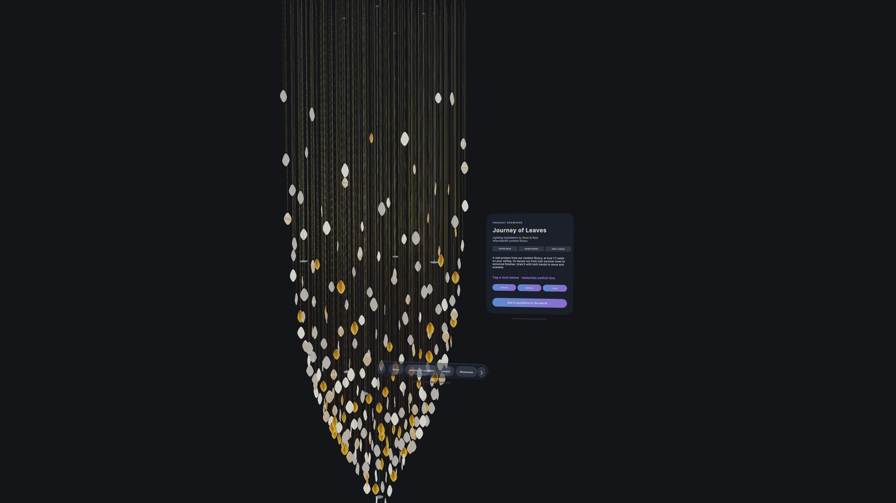
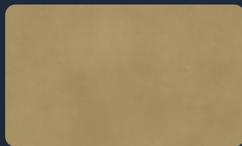
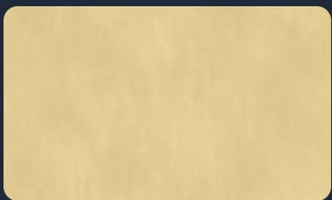
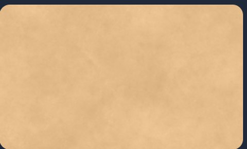
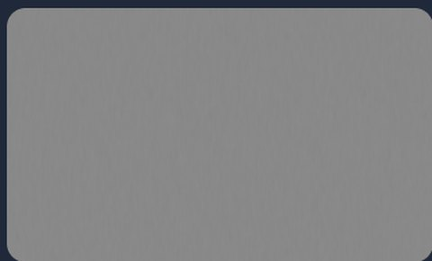
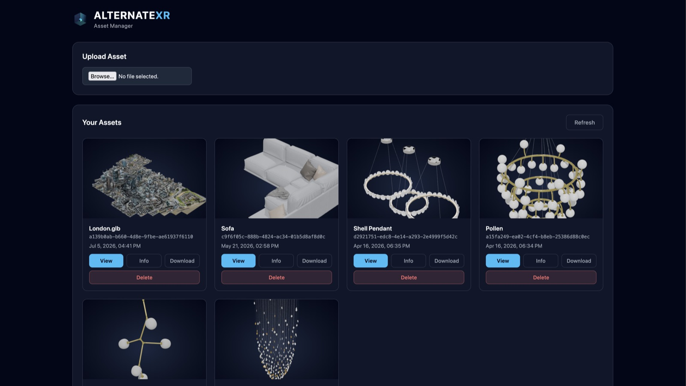
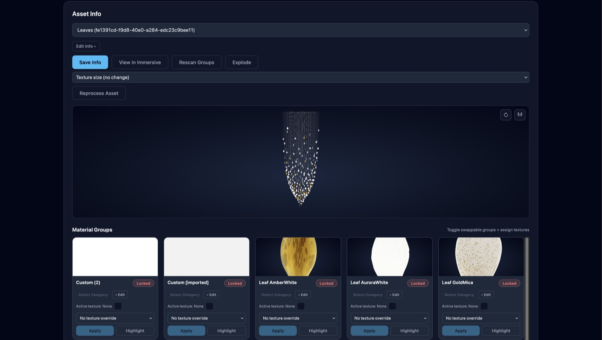
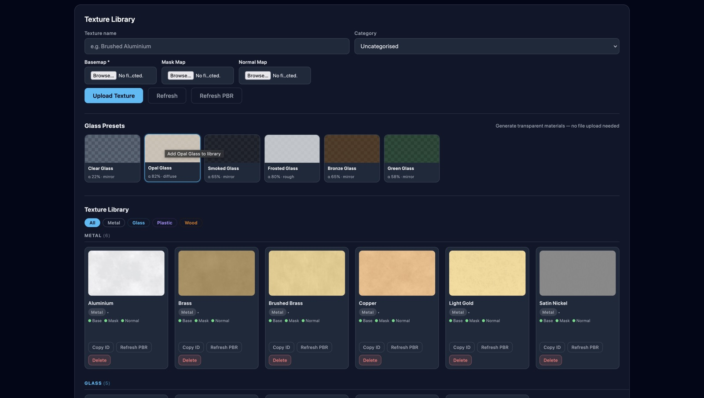
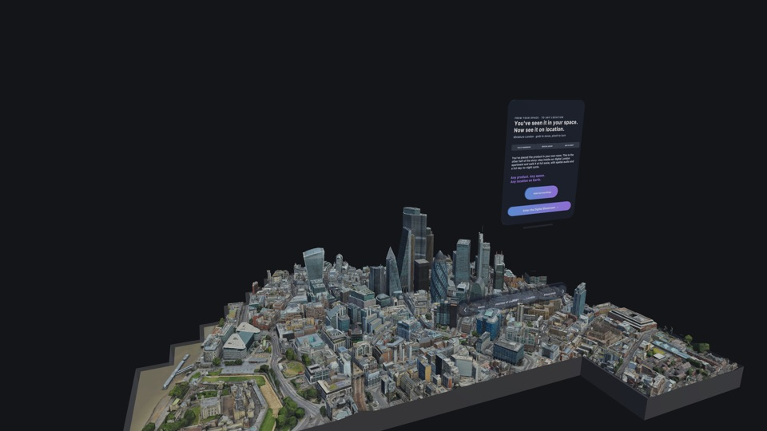

True scale
At 1:1, where it would hang
Grab it with both hands to move and examine it. The size question answers itself the moment it's in the room.

Upload a model. It comes back Vision-ready in minutes — hosted, and viewable at true 1:1 scale in your client's own room.
Every catalogue in the world has the same limitation. A product photographed in a studio, or rendered in a scene that isn't yours, leaves the buyer doing arithmetic in their head: how big is that actually, in my room, in my light, next to my furniture?
A headset removes the arithmetic. The piece hangs where it would hang, at the size it would be, in the light the room actually has. What stops most companies doing this isn't the idea — it's that their 3D files were built for manufacturing or marketing renders, not for a device that has to draw them sixty times a second.
That gap is the whole job. It's what the pipeline closes, automatically.
Send the file you already have. No cleanup, no export instructions, no “please decimate first”.
Drop the model in as it exists. Hierarchy, naming and geometry can be as messy as they came out of your CAD package.
Automated hierarchy flattening, mesh decimation with silhouette preservation, UV work, texture atlasing and draw-call reduction — against the Vision Pro frame budget.
Material groups are detected for you. Assign finishes, upload PBR textures or generate glass — in a browser, with no 3D software open.
Hosted and pulled on-device, at true scale in any room — or dropped onto a location anywhere on Earth.
A single product takes minutes, depending on its complexity and size.
Finishes aren't baked into the model. They're a library you build once and apply to anything — and swap live, in the headset, in front of the client.




Six of the metals sitting in a live Asset Manager library right now. Each one carries a full PBR set — basemap, mask map and normal map — so it reads as metal under real lighting rather than as a flat colour.
Glass is generated rather than uploaded — clear, opal, smoked, frosted, bronze and green presets, each with its own transparency and roughness, with no texture files needed at all.
The pipeline has a front end. Everything below happens in a browser, by you, without a single email to us.

Drop a file in and it's processed, thumbnailed and listed. Everything you've sent is in one place, ready to view, download or push to a headset.

The model is scanned and its material groups surfaced as slots you can fill. Assign a texture, apply it, and check the result in the preview before it ever reaches a headset.

Upload basemaps, mask maps and normal maps once and reuse them across every product you own. Glass is generated from presets, so the hardest material to author is a click.
Grab it with both hands to move and examine it. The size question answers itself the moment it's in the room.

Step outside the room entirely and place the product on a real site — useful long before anything has been installed.
| Single product | Full space | |
|---|---|---|
| Input | All major 3D formats | All major 3D formats, including BIM |
| Output | USDZ and GLB | USDZ and GLB |
| Turnaround | Minutes, with complexity and size | Days to weeks, with complexity |
| Method | Automated | Automated, plus hands-on work |
| You then | Build material sets in the browser | Walk it at full scale on Vision Pro |
| Viewing | True 1:1 in any room, or on location | Full scale, at different times of day |
Thirty minutes is enough to walk you through Asset Manager, run one of your own files through it, and show you the result in a headset.